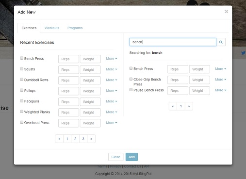
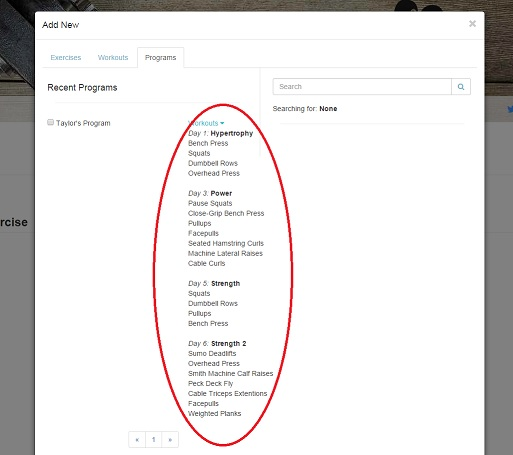

My Diary
Adding to your diary
Your diary page is a record of all your lifting you have done each day. You can cycle through the days by using the arrows at the top of the page, or by clicking on the calendar icon and selected a specific day.To add an exercise to the diary, click the circular plus button at the bottom of the page. From here, a modal will popup allowing you to see all recently added exercises as well as a search section where you can search for specific exercises in the exercise database.  To add workouts and programs, follow the same steps.
Adding a workout will automatically add the list of exercises in that workout to your diary. Adding a program will automatically add the list of workouts to the specified days starting from the currently selected day in your diary.  Once you’ve added exercises, you can easily add new sets by clicking the smaller circular plus button next to the exercise. You can remove an entire set by click the circular cross button. Alternatively you can modify a singular set by expanding the set group for that exercise and toggling the settings menu. From here you can edit or delete by clicking these buttons.
RPE explained
RPE stands for rated perceived exertion. It is a scale to determine the difficulty of a set on a given day. Every day brings different challenges. Some days you feel good and you hit your sets easily. Other days you feel bad and you question if you even lift. RPE is a scale that can help you adjust your training to suit the day’s circumstances. Instead of pushing for the weight you wrote in your workout, maybe instead try using an RPE system to auto regulate the weight based on how you feel. Many athletes have used this system and found it to be very beneficial for long term programming.Even if you don’t adjust your training by RPE, you can still use the scale as a tool to measure how hard a set was on that day so you can one day look back and see how far you have come when an RPE 10 becomes an RPE 8 with the same volume.
An added benefit to using MyLiftingPal, is that you can graph your RPE using the stats page and determine if you are consistently hitting the desired RPE’s. If you are started to hit high RPE’s when you shouldn’t be. That will tell you that you are overreached and it may be time to back off.
One rep max & percentages explained
A one rep max is exactly what you think it is. It is the heaviest weight you can do a single repetition with.Why is this important to know? Of course, if your primary concern is something like powerlifting then the one rep max is the only thing that matters. However, even for the general trainee, it’s important to use this measurement as a tool in your training.
If you know your one rep max, there are statistical models that can guide your weights and set/rep schemes you should be using. The table below shows some examples of popular models that have been used successfully in the past. So say you want to do sets of 8 reps? Well according to this table that will be somewhere between 75-80% of your one rep max. Simple, easy and eliminates the guess work you need to make when you go to the gym. Combine this with Prilepin's Chart, and you have a rough guideline to writing your own programming. Of course, there will be people who do not fit these statistical models, but it is a good place to start. Remember the key to programming is doing more volume (weight x reps x sets) over time. These measures and merely tools to help you achieve this.
If you want to utilise percentages in MyLiftingPal, you can add a new exercise or set with the percentage field filled in and weight field left blank. The system will then automatically figure out the weight based on your one rep max (make sure you have given your one rep max in your profile).
Tips and tricks
MyLiftingPal has many useful features you may not have seen at a first glance.Let’s start with the exercise log The exercise log is a tool used to quickly identify person records related to that set. You can look at easily see:
- Best amount of reps with a given weight
- Best weight with that exercise
- Best volume (weight x reps x sets) with that amount of reps
- What you did last time
The exercise log is also a place to write more detailed notes about the sets that the RPE scale cannot describe. Did you throw up mid set? Well that might be something worth noting, if not just for a laugh when you look back in the future.
Within each sets settings, you also have the ability to share your set on Facebook or Google+. Want to tell your friends you just did a 100kg bench? You can easily share this within MyLiftingPal. Your diary page also offers tools to assist you during lifting. There is a stopwatch timer and a one rep max calculator in case you need this quickly during your training. We want MyLiftingPal to be all you need for your training. No more going off to different apps and websites. To access these simply click the clock or calculator.

My Exercises
Adding new exercises
To add a new exercise, navigate to your exercise page From here enter in an exercise name, select the muscle group’s involved (you can select more than one) and select the exercise types related to this movement (you can select more than one)Determining muscle groups and exercise types
Ok, so you don’t know which muscle group or exercise type the exercise you want to add is?Well go off and read a kinesiology book. Do I look like a lecturer to you?
Just kidding, we’ve made a short questionnaire to help you determine which muscle groups and exercise types are involved in a given movement. I do recommend you to learn for yourself and understand the movements of the human body, but you need to track and I don’t want to hold you back.
Open questionnaire
My Workouts
Adding new workouts
To add a new workout, navigate to your workout page Enter a workout name and click the big circular plus button to add exercises. Clicking this button will bring up a modal similar to the one on your diary page.
From here, just find and select the exercises you want to add to the workout, click create and it’s done.
Enter a workout name and click the big circular plus button to add exercises. Clicking this button will bring up a modal similar to the one on your diary page.
From here, just find and select the exercises you want to add to the workout, click create and it’s done.
My Programs
Adding new programs
To add a new program, navigate to your program page Enter a program name and choose the duration of the program. As you increase the number of days, you will get empty slots where you can choose to put in a workout Click one of these buttons and you will get a modal similar to your diary page with the ability to select a single workout to add to that day. Once you have finished adding workouts to the program, click createMy Stats
How to use
To use the stats page there are 4 settings you need to know about.Firstly is the metric you want to graph. This can be found at the top left corner of the page. Here you will see four metrics which you can graph by. There are:
- Volume (weight x reps x sets)
- Weight
- Intensity (the percentage of your one rep max)
- RPE
How to interpret
How you interpret the graph depends entirely on the metric you are viewing and your training protocol you are following.If you choose volume, long term you will want to see an upward trend. Short term, you may want to see something different. Say if you are peaking or have blocks where you are focusing on different aspects of training. You’ll potentially want to see volume decreasing during the training cycle, however if you graphed the intensity, this would increase over time. That is a typical style of programming called linear periodization. So this would depend on your training protocol. Choosing weight would also be similar to what you will see with volume. Long term you will want to see an upward trend. Short term, you might see cycles of less weight increasing to larger weights. The last metric is RPE. RPE can be an interesting metric to graph and can really give you insight how accurate your training is. By graphing RPE you can see exactly when overreaching is occurring because the RPE’s will be consistently higher than expected. Of course, proper programming will factor in higher RPE days and will have a balance to avoid this prematurely. However, a more basic program such as Starting Strength, which doesn’t give you this guide line, would benefit from utilising this statistic. This would prevent unnecessary stalling and wasting time when it’s clear what is happening. Deload before it becomes an issue and you miss reps or sets.
Utilising your stats page is key to effective training. You can always take your workouts one day at a time, but the benefits to seeing you training from a statistical standpoint are countless. Make sure you stay at least one step ahead of the game and make your training as optimal as possible.
Profile and Settings
How to change your profile
To make changes to your user profile or settings, click the dropdown link with your username From here you can click on profile or settings to make changes.In your profile you have the ability to do a few things.
Firstly, you can connect your Facebook or Google+ page to your account. To do this, simply click on connect and follow the steps in the popup box. You can also change your profile picture by clicking the “Change Picture” link. This will bring up a modal with the ability to enter your own image (120x120). The final options you have is to edit or delete your account. Simply click these buttons to perform these actions.